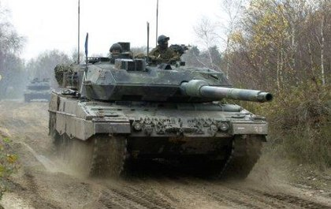

Leopard II
Informacije o vozilu:
| Specifikacija | Detalji |
|---|---|
| Naziv | Kampfpanzer Leopard II |
| Tip | Srednji tenk (61,7 tone) |
| Uveden u uporabu | 1979. godine |
| Naoružanje | 120 mm Rheinmetall L55 top i 2x 7,62 mm MG3A1 strojnica |
| Oklop | višeslojni oklop 3. generacije |
| Brzina | 72 km/h |
| Posada | 4 člana |
Rheinmetallov 120 mm glatkocijevni top je u potpunosti stabiliziran u obje ravnine, a WNA-H22 elektro-hidraulični pokretač topa se brine za stabilizaciju. Top može ispaljivati dvije vrste streljiva, koje je razvio Rheinmetall APFSDS-T, znan kao DM-33 KE (Kinetishe Energy) i HEAT-MP-T, znan kao DM-12 MZ (Mehrzweck = višenamjenski). Borbeni komplet se sastoji od 42 granate, od kojih su 27 smještene u poseban odjeljak u prednjoj strani tijela lijevo od vozača, a ostalih 15 na lijevoj strani kupole, odvojeno od posade s elektro pokretanim vratim. Ako bi municija slučajno bila pogođena, ispusti na krovu kupole bi snagu eksplozije usmjerio na krov kupole, iznad tenka. Suspregnuta 7,62 mm strojnica postavljena je lijevo od topa, a tenk nosi 4,750 metaka za tu strojnicu.

Leopard II tijekom vojnih vježbi